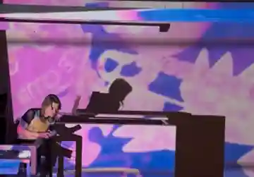

rachel heleva
games, systems, verse
game designer · researcher · curator
making and studying playable systems
selected work
Games, systems, and playable experiments.
writings
Essays, research notes, and other inquiries.
First dispatch forthcoming.
about
I'm Rachel Heleva, a game designer, researcher, and curator working across computational poetics, games, interactive systems, and playable culture. More about me ↗
- PhD student, Performance Studies · UC Davis
- Researcher · SING Lab
- Executive Director · Museum of Art and Digital Entertainment, Oakland

about
I'm Rachel Heleva, a game researcher, designer, and scout working across games, computational poetics, and playable culture. I'm a PhD student in Performance Studies at UC Davis and a researcher in the Social Intelligence, Narrative, and Games (SING) Lab, led by Joshua McCoy.
My research looks at how rules and systems produce possibilities that players learn to read through play. I bring that interest to game scouting, publishing, production, and my work as Executive Director of the Museum of Art and Digital Entertainment in Oakland.
Affiliations
Jury & Selection
- 2025–2026 · D.I.C.E. Awards · Peer Panelist, Outstanding Achievement for an Independent Game
- Independent Games Festival · General Judging Pool
- Games for Change · Jury Member
Talks & Programming
- 2026 · Game Poems, Computational Poetry Reading Group · Guest curator and presenter, tiat, San Francisco
Interviews
- 2026 · Quest Markers, Episode 42 · Answering Your Questions About Games Publishing
Education
- PhD, Performance Studies · UC Davis (in progress)
- BA, Cinema & Digital Media · UC Davis
- BA, English · UC Davis
Elsewhere
In Countless Shadows
An experimental puzzle game about poetry, form, and the possibilities of language.
What happens when a poem becomes a system you can play?
In Countless Shadows is a playable exploration of Shakespeare's sonnets, treating poetic form not simply as a literary convention but as a system of interacting rules, constraints, and possibilities.
Built in Godot, the game invites players to dismantle and recompose Shakespeare's poetry, rearranging words while navigating the relationships between meter, rhyme, repetition, and rhetorical structure. Each decision can create new formal possibilities, disrupt existing patterns, or transform the meaning of a verse.
The project explores the relationship between puzzle design and computational poetics: how can the structures of poetry become discoverable through play? And what happens when a poem can satisfy its formal constraints while remaining open to multiple interpretations?
Beginning with Sonnet 17, In Countless Shadows is an ongoing experiment in making poetic form playable, with the broader ambition of exploring Shakespeare's complete sonnet sequence.
- Status
- In development
- Engine
- Godot / GDScript
you are rhyme
An experimental theatrical duel where spoken language becomes a system of action.
What if performing a line of Shakespeare changed the world of the play?
you are rhyme is a voice-activated theatrical game built around the confrontation between Hamlet and Gertrude in Act III, Scene IV. Rather than selecting moves from a conventional menu, players speak their characters' lines. How those lines are delivered shapes what happens on a tactical grid.
The game translates vocal performance into rules. A local speech-recognition pipeline listens for pauses and volume, while the system compares spoken words with Shakespeare's script and measures changes in pacing. Those signals pass through a custom domain-specific language that turns performance into actions such as lunging, feinting, repelling, disarming, and altering the arras.
The two roles have different possibilities. Hamlet tries to reach Polonius behind the arras; Gertrude tries to protect him. A procedurally generated stage places bodies, barriers, and furniture into changing configurations. The project also experiments with genetic algorithms that test candidate layouts through simulated matches.
you are rhyme asks what happens when theatrical interpretation is made operational: when a pause, an emphatic line, or a departure from the text is no longer only a matter of expression, but a consequential move inside a playable system.
- Status
- Prototype / in development
- Format
- Voice-controlled theatrical strategy game
- Technology
- React, Vite, Node.js, Python, Whisper, custom DSL, genetic algorithms